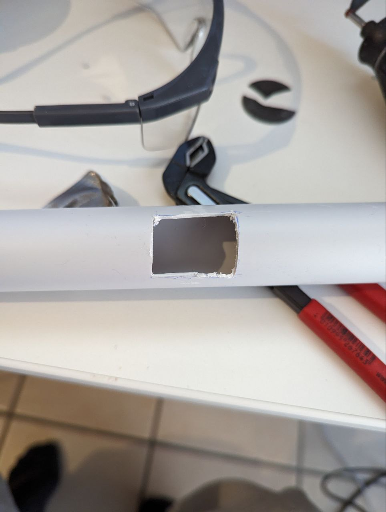
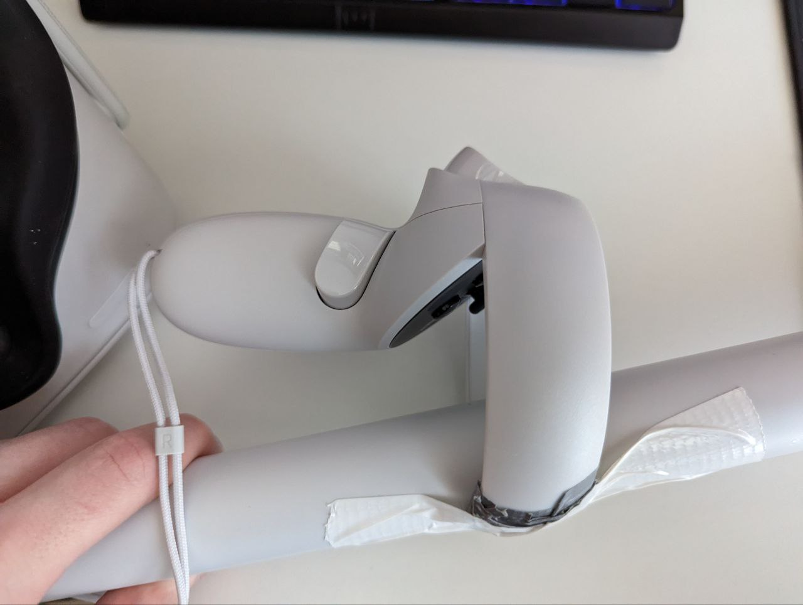
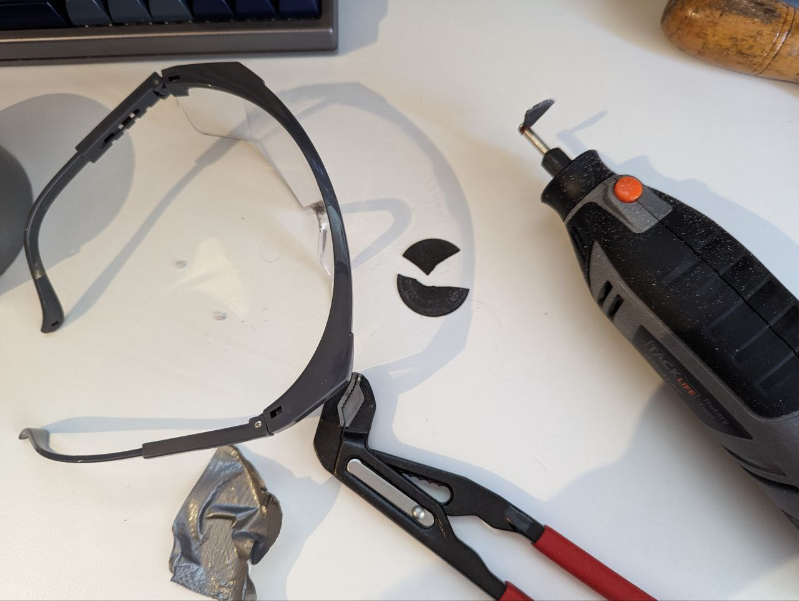

5. Pole
Concept
To increase the presence of the user I wanted to create a pole that the player would have to hold in real life. The pole would be tracked by the headset and would be used to interact with the game.
Creating the Pole
I bought a two-meter-long pvc pipe and cut it to an appropriate length. Using a Dremel I cut a groove into the pipe.  The ring of the controller sits in the groove and allows for a solid mount using a piece of duct tape.  In Unity the real-life pole is then lined up with the controller and paddle model. For weights, I bought two 1kg wrist weights. I was planning to attach these to the end of the pole but decided that it would suffice if the user whore them on their arms.
Extra:
This was my first time using a Dremel and I learned why you should always wear eye protection while using one. 